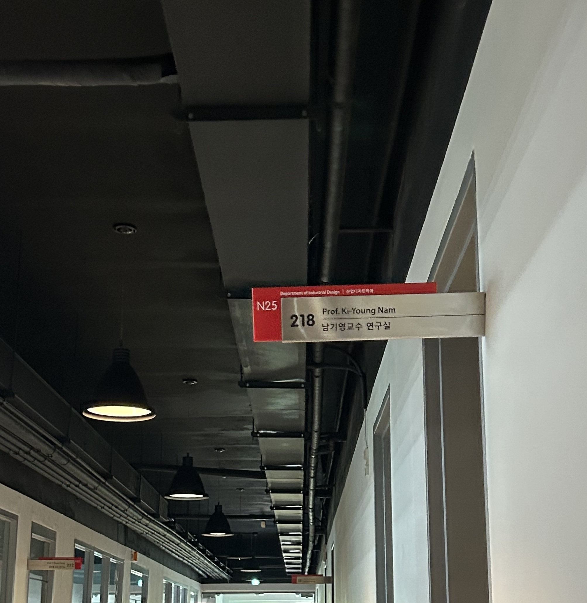
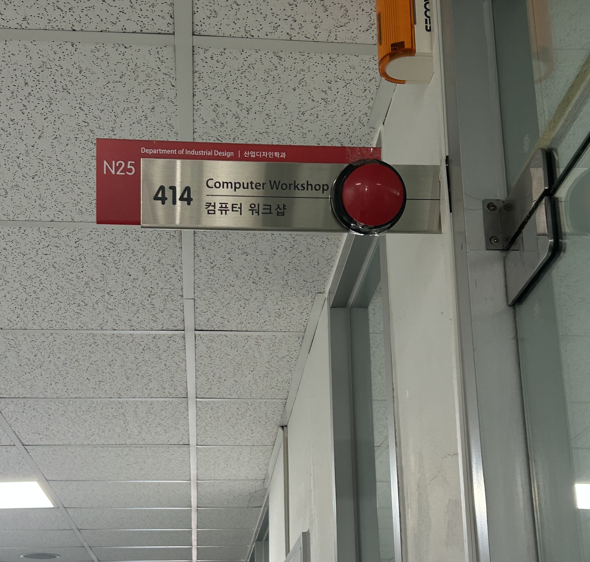

Don’t Press It!
Classroom Sign, N25
Where?
The site is the classroom sign for the entrance of room 414 in N25, which is frequently visited by students working on team projects during the final project weeks. The sign was normally used as a quiet information object: people checked the room number, confirmed the location, and passed by.
What?
I temporarily attached a large red button to the classroom sign. The button does not activate anything. Instead, it changes the sign from something only meant to be read into something that seemed to ask for touch.


When?
After experimenting with the location, the prototype was installed in N25 on June 10th.
How?
I attatched a red button with removeable tape so that the sign would not be damaged. The installation was temporary and designed to leave no permanent mark.
Observation and Documentation
I tested different locations for the button until I found a spot that best matched my intention. I photographed the site before and after the installation, and observed how people responded — whether they noticed the button, hesitated, reached for it, pressed it, or simply ignored it.
Read. Confirm. Pass By.
Original Protocol
The original protocol of this site is simple and polite. People read the classroom sign, confirm the room, and continue walking. The sign is treated as official information, not as an object to touch, play with, or question.
Intention
We are often taught not to touch things in public. For example, a child walking with their
mother might discover a button and instinctively want to press it. The mother would probably
say, “Don’t touch that.” Over time, we learn to control that impulse. We learn that public
objects are usually meant to be seen, read, or passed by — not touched.
But at the same time, we grew up touching things in public all the time - even though it
does nothing. As students, we played with classroom signs, tapped walls, pressed random switches,
and did small unnecessary actions just because they were there.
This contradiction became the starting point of my project. What if there was a button in a
public academic space?
My initial idea was to reveal a small playful impulse that people usually suppress
in academic spaces. I expected people to notice the button and wonder:
"What is this? Why is it here? What happens if I press it?"
Because the button is attached to a classroom sign, pressing it becomes slightly more visible and awkward than pressing a button at hand level. The action begins to feel like a small childhood classroom prank: harmless, unnecessary, a little embarrassing, but tempting. The button intentionally does nothing, because the act of pressing it is not based on reward. It is based on a childish impulse: the sudden urge to press something simply because it is there.


Why This?
I chose a button because it already contains an action. A poster would still be read, but a button asks to be pressed.
By placing it on a classroom sign, I created a direct conflict between two behaviors: reading and touching.
I also chose a red button because red carries a strong visual signal. It suggests warning, danger,
emergency, attention, or importance.
At the same time, a big red button is also playful and familiar. It often appears as something dramatic,
forbidden, or tempting. This makes the object feel urgent even when it does nothing.
Because of this, the red button creates a contradiction. It looks important, but it has no function.
It looks like something people should not touch, but it also strongly invites touch.
Why It Is Beautiful
Its beauty is in the tightness of the reasoning. The site was an official sign made for reading, so the minimum necessary intervention was an object that asks to be touched. The red button feels inevitable because it directly interrupts the site’s existing protocol without needing explanation.
The button does not respond.
The person does.
What Changed?
What Happened
During the placement experiment, I realized that the height of the button changed the meaning of the action. If the button was too easy to reach, pressing it felt casual and ordinary. But when it was placed slightly out of reach, the action became more visible, awkward, and intentional. Pressing the button became a small public misbehavior rather than a simple touch.
After being installed in the final location, the prototype showed that the most interesting moment is not after pressing the button, but before pressing it. In the observation, fewer people actually pressed the button than I expected. Maybe many people had already grown into polite adults who know not to touch strange objects in public.
However, many people still noticed the classroom sign in a way they normally would not have. Instead of simply passing by, they looked at the button with curiosity, paused for a moment, and seemed to consider whether or not they should press it. This hesitation became the most meaningful reaction.
Impact
The button changed the classroom sign from a passive information object into a small stage for hesitation. It made the invisible rule of the site visible: do not touch official things, do not behave childishly, and do not draw attention to yourself in the hallway.
Did It Work?
It worked partly as intended. The button created curiosity and made the sign feel touchable. Although not many people actually pressed it, many people paused for a moment and seemed to consider whether or not they should. In that sense, the button worked by creating hesitation rather than action.
This webpage is not just a passive record.
It repeats the same question in a digital form:
Will you press something that does nothing?